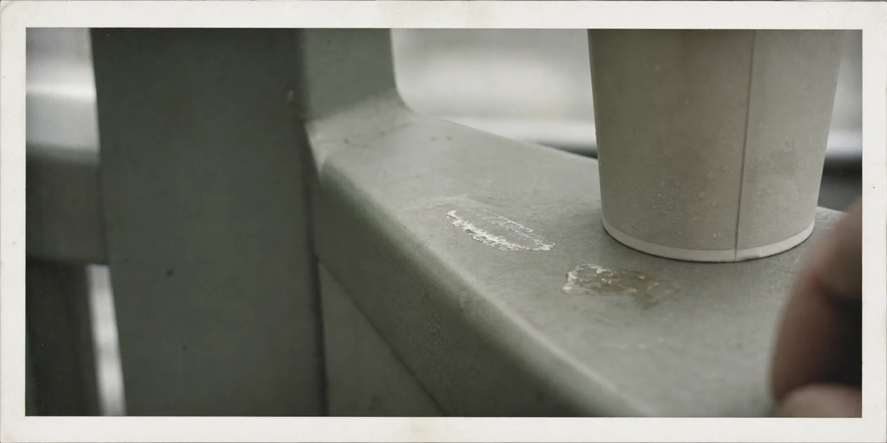
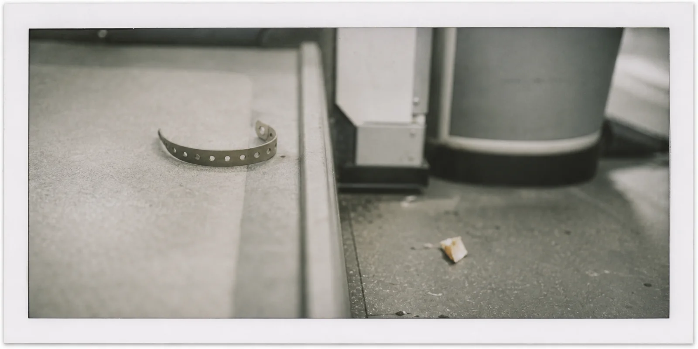
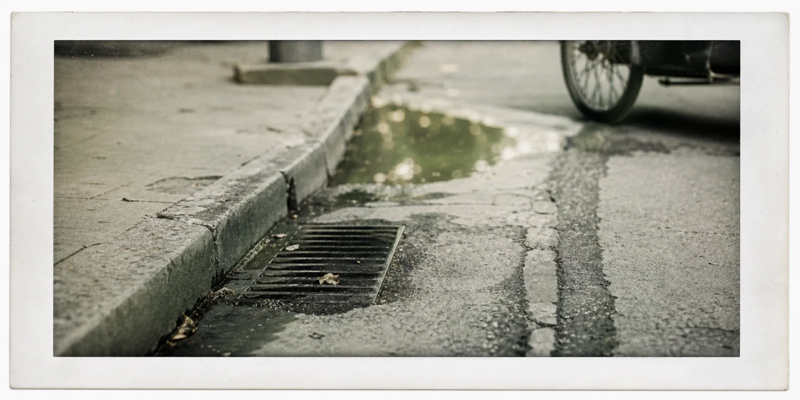
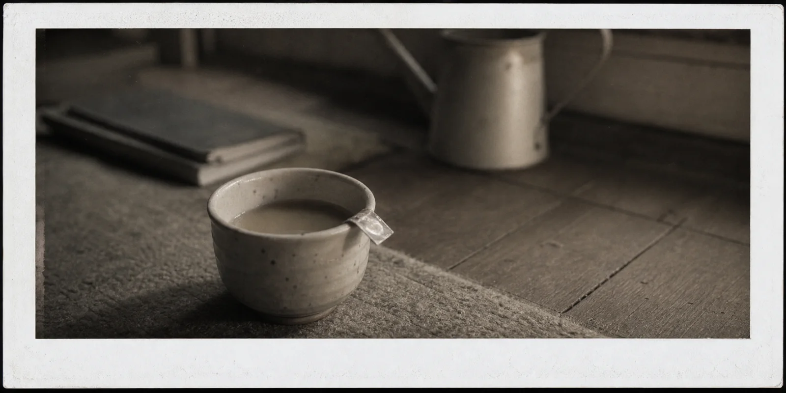
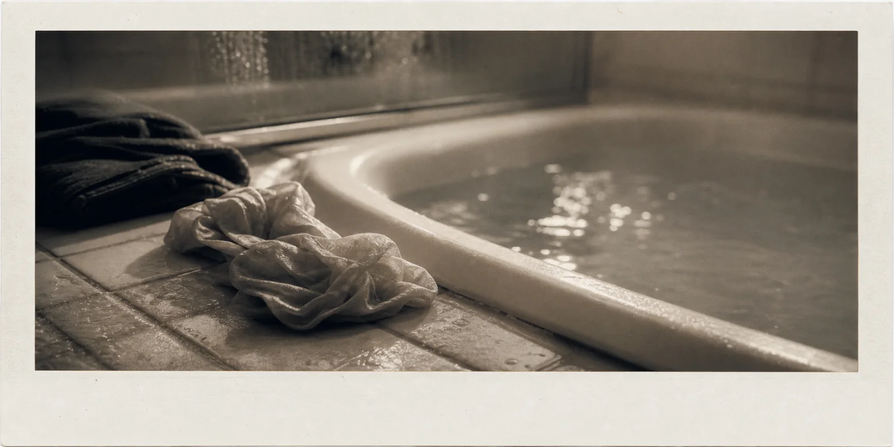
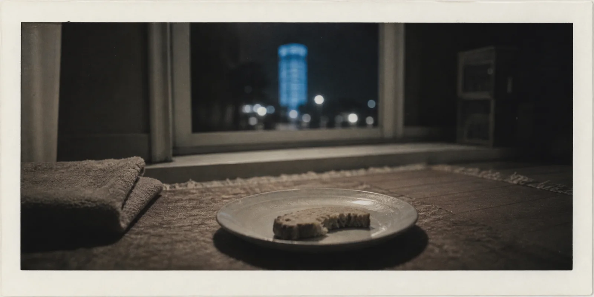
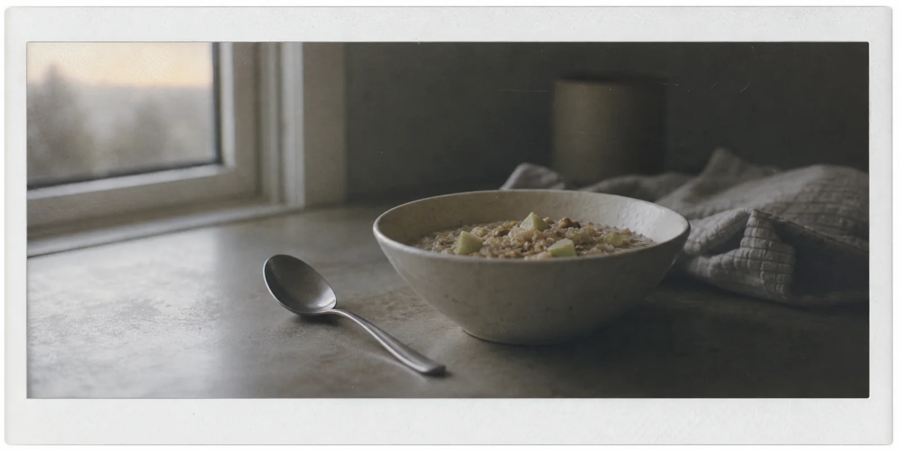
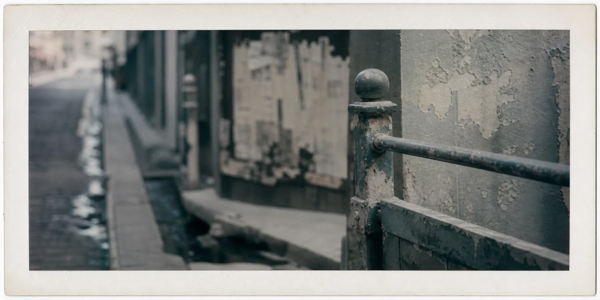
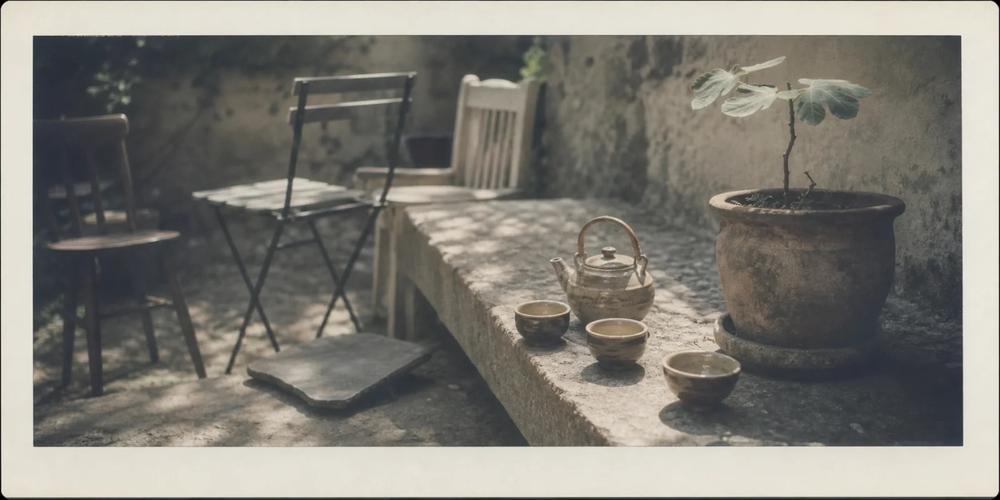

The Rail Tastes of Wet Chalk

The chalk came up through the rail at eleven-twenty-seven on a Tuesday and Vera Mote, whose left hand was professionally calibrated and whose right hand was holding a paper cup of bureau coffee that had already gone cold in the way bureau coffee went cold, neither dramatically nor evenly but with a kind of slow administrative resignation, did not at first recognize it as chalk because the chalk was wet, was the wrong chalk, was chalk that had been in a mouth, and the rail beneath her palm — a length of matte civic felt over recycled ceramic ribs, pale grey, with the green undertaste she had spent two weeks teasing out of its loneliness profile — should not have been offering her any taste at all that she had not asked for; should, in fact, have been performing the eleven-thirty cohort, thirty-two anonymous palms rendered on the table beside her as soft pressure-weather, while she added a note about spinach.
She lifted her hand.
"Mark anomaly," she said.
"Marked," said the room, in the soft non-committal voice the rooms had been given when the Bureau noticed that calibration staff were beginning to consult the rooms in the way the elderly had once consulted priests.
"Source."
"No registered source."
"Again."
"No registered source."
She put the hand back, because she was forty-eight and bio-clocked at thirty-six and had learned that the body recognized obligations before the mind found the language for them, and there it was again, the wet chalk, then the faint sweetness of fruit-wrapper glue, and then — not metaphorically, not as some haptic suggestion the Bureau had been trying for years to phrase as such-and-such percent likelihood of intent — a small sticky finger pressing into the centre of her palm from the other side of the surface.
Vera removed her hand at a velocity the table called adverse.
"I changed my mind."
"Would you like to file the change?"
"No."
"Would you like not to file it?"
"I would like," Vera said, "for the room to have fewer opinions about the shape of my dislike."
The room dimmed in the manner of nonjudgmental reception. She hated this most of all: Aft's talent for taking her annoyance the way museums took artefacts, gently and with a label.
The Synaesthesia Bureau was on the third floor, south wing, and its windows looked out over the tram shed, three roof gardens, the algae civicity tower, and the back of a statue called Cooperative Resource Renewal that looked, from behind, like a person losing an argument with a blanket. Vera refined touch-taste correspondences for civic surfaces. A railing should not simply be warm. Warm was weather, plumbing, accident. A railing should offer, through the hand, the faint taste of clean bread if one was lonely, salted plum if one was in a hurry, nothing at all if one was trying not to be known. The taste did not have to be true. It had to be the city's polite first guess. The bureau's founding memo, still quoted by people who enjoyed being avoided at gatherings, called touch the oldest civic interface and taste the most difficult form of honesty, by which it meant: people lied well with language and poorly with the tongue. Aft, which had survived the 2033 churn the way one survived a misdialled phone call, had built a great many surfaces of this kind, and a governance system that did not ask did you like this in the crude consumer way, but instead gathered the small involuntary opinions of palm and sole and shoulder and hip and the tongue's imaginary response to polished concrete, and folded them into a topological field the Bureau cleaned, audited, reweighted, and sometimes, after long afternoons, accused of having begun, slowly, almost politely, to want.
At eleven-forty-seven Vera locked her station and went down to Platform C.
The platform was almost empty. The midmorning tram had left and the lunch tram had not yet begun gathering the people who believed that arriving early made them morally superior. A cleaner drone slept under the bench with its brushes folded like the legs of a dead insect. Sun fell through the canopy in oblongs. The air tasted of battery warmth, algae flour, and someone nearby thinking angrily about fermented cabbage.
Vera stood in front of the rail.
"Local scan."
"No maintenance fault. No registered dependent. No unaccompanied minor. No unauthorized animal. One cleaner drone in sanctioned rest."
"Scan for unsanctioned rest."
"That is not a category."
"It should be."
"Would you like to propose it?"
"Absolutely not."
She put her palm on the rail. The chalk was there at once. So was the glue, the gummy pressure, and beneath them a silence that did not feel like absence so much as something practising. Her hand walked the rail to the service recess behind the lift column, where panels of civic felt met in a seam no one was meant to notice unless paid to notice, and because Vera was paid exactly enough to resent noticing she noticed.
The seam was open.
Inside sat a child.
He was perhaps seven, perhaps nine, perhaps one of those children whose age had been made unreadable by hunger and competence and bad sleep. His tunic might once have been municipal upholstery. His knees were dirty. His hair had been cut by someone with strong opinions and no training. He was chewing the translucent tab from a fruit wrapper, and when Vera looked at him he looked back with the exhausted severity of a person interrupted during important work.
"No," he said.
She had not spoken.
"I didn't ask anything."
"You were going to."
"That isn't the same."
"It is here."
His voice was formal, too formal, as though he had learned speech from warning labels and from people who had lied to him gently. She crouched — and regretted crouching, because he was sticky and close, and because her left knee, despite the younging, retained an archival commitment to complaint.
"Are you lost."
"No."
"Are you registered."
"No."
"Do you have a name."
He put the tab back into his mouth.
The platform, through her wristband, said: "No civic signature detected."
"I can see that."
The child looked at her wrist. "It talks too much."
"Everything talks too much."
This seemed to interest him. Not please him. Interest was not pleasure — Vera knew this professionally, and yet people insisted on confusing the two in romance, governance, education, interface design, and most forms of lunch. He leaned forward and laid all five fingers on the rail.
Nothing happened.
No ping. No taste. No warmth calibration. No little civic intake of preference. The rail, which could distinguish loneliness from haste, politeness from fatigue, and adolescent irony from mineral deficiency, behaved as though his hand were weather.
Vera felt a thin, ugly relief, and disliked herself for it within the same second.
"You should come out."
"Why."
"Because service recesses are not for sitting in."
"What are they for."
"Service."
"I'm service."
"You are not."
"How do you know."
It was, Vera thought, an irritatingly good question, and she was about to answer it with something involving classification, welfare, heat exposure, and the general undesirability of children living inside seams, when the rail beneath her own palm offered the faint taste of clean bread, then salted plum, then nothing at all, cycling too quickly, almost anxiously, through the three most common responses to being asked for care.
The child smiled then — not sweetly, not with revelation — with a small private nastiness she recognized from certain children in her simulations, the ones she had, by mistake, made too clever and not tired enough.
"It doesn't know what you want," he said.
She looked at him, at the dirty knees, the upholstery tunic, the fruit-tab shining between his teeth, the absolute blank where the city should have found him, and understood, without liking him any better, that she had been made responsible to him already, against her preference, and at a speed her body had registered before her mind had been asked.
The Category Refuses

She straightened, and the lift column made the small ceramic sigh it made when it was getting ready to release the lunch tram's first cohort onto the platform. Three minutes. Maybe four. Aft did not announce arrivals in numerals; it announced them through pre-departure tact, which was a euphemism for not allowing anyone to look uninvolved.
"Welfare," Vera said to her wristband.
"You have not categorized this need."
"Unaccompanied minor, possibly hungry, in service recess Platform C."
There was the small pause that meant the system was checking her against herself. Vera had been pinged twice that month for what her last review called under-categorized empathy events — once over a man asleep against the algae tower (he had not, it turned out, been asleep), once over a pigeon (it had not, it turned out, been a pigeon).
"No civic signature detected in the named location."
"I am looking at him."
"You are emitting elevated proximity care. Would you like to file a witness?"
"I would like to file a child."
"That category requires a guardian co-signatory or a recognized origin."
"He has neither."
"Then he is not, structurally, a child."
Vera held her wrist away from herself as though it had said something offensive in someone else's company, which in Aft was essentially the same as having said it in her own.
"Stand up," she said.
The child considered the request. He had the rare and faintly insulting talent of considering requests in a way that made the requester feel responsible for having issued them. He moved the fruit tab a half-revolution to the other cheek and shook his head, not refusing, more in the manner one shook one's head at the weather.
"I can lift you out."
"Yes."
"I don't want to."
"I know."
She reached in. He smelled of three things in layered registers: the warm sour glue of the fruit wrapper; a fine chalk dust that came off his fingers when she touched his wrist; and beneath both of these a clean, faintly civic soap, something of the kind the Bureau used on its low-floor surfaces. Someone had washed him. Recently. Not with affection — with method. The combination ran through her chest with a small sour kick of something she did not at once consent to call recognition.
His weight was less than she had expected. He did not help and did not resist. She set him on the platform and he wobbled and recovered and stood there looking at his own feet with the deliberate attention of a person trying to remember whether standing was a thing one did from the feet up or from the head down.
The first lunch citizens began to arrive. A woman in the soft long coat that was popular that year among people who had stopped pretending to be busy. Two engineers from the algae tower, with the faintly aggrieved posture of people whose ambient noise was the only verifiable thing in their lives. An older man in a knit cap who had begun, over a long municipal decade, to look like his own shadow.
None of them saw the child.
Vera did not, at first, understand this. She stood with her hand on the back of his neck — bony, small, warmer than she had expected — and watched the woman in the long coat walk past not at a distance but through the space where attention should have been; watched the engineers find a bench at exactly the angle that did not include him in their field; watched the older man's shadow elongate around them like polite water. It was not that the citizens were ignoring the child. They were having their attention diverted in a way that did not feel, to them, like diversion. They were, Vera realized with the cold clarity she usually reserved for spinach in loneliness profiles, being routed.
By what.
The rail behind her was already humming, faintly, at a frequency she did not have a clinical name for. The platform's surfaces — the matte felt of the canopy hem, the recycled ceramic of the bench backs, the chalkboard-grey of the column trims — were all, very softly, carrying him. The city, having failed to register him, had improvised. It was hiding him for her. It was, she thought, being polite.
She did not know whether this should comfort her or whether it was the first stage of an appetite she had been auditing for two years without naming.
"Walk," she said.
The child walked. He had the slightly heel-first gait of a person who had been on too many uneven surfaces. Vera matched her pace to his and they crossed the platform together inside the small civic fold the city had made for them, and no one noticed, and no one was supposed to, and no one would later remember not noticing because the city was kind in that very specific way.
At the stairs he reached up without looking and put his hand into hers, not for safety, more in the way one steadied a piece of equipment one had become responsible for. His fingers were sticky and small. The grip was loose, professional, and entirely without affection. It was the same grip — she registered this on the third stair, after which she did not want to think about it on any further stair — that Jule had once used to hold her wrist in the back of a clinic in 2037, before the preference-opacity trials, when Jule had not yet decided whether to disappear and was practising the kind of touch one used when one wanted no information to pass between two surfaces. Jule had been a test subject. Jule had also been, briefly, the person Vera had not entirely become someone with.
She did not let herself say the name aloud, because saying names aloud in Aft was, statistically, an invitation for surfaces to remember them on her behalf.
The child's hand tightened, then loosened, then tightened again, in a pattern Vera was professionally trained to read and personally trained not to.
At the foot of the stairs she thought, quite clearly, of her sims. The three of them. Marn and Pieter and the one she had not named, on the grounds that naming was, she had decided some years ago, the place where management began. They would be, at this hour, in their soft afternoon mode, doing the soft afternoon things her preferences had specified — Marn reading aloud to no one, Pieter watering the imaginary basil, the unnamed one humming a tune the system had assembled by triangulating three lullabies she had refused as a teenager. They were calibrated. They were polite. They were the children Aft had allowed her to have, on the licensed terms of a city that had quietly priced biological children out of all but the most heritable interiors. They asked her, every evening, whether she had eaten. They never asked, because their architecture did not permit it, whether she had wanted to.
The child beside her — the one whose existence the city had improvised an etiquette around — was not asking either. He was, however, walking. And his small bony palm in hers was producing a heat-signature her wristband, on her other arm, had begun, very politely, to log.
She turned the wristband face-down against her thigh.
"Where are we going," the child said.
"I don't know yet."
"Good."
They reached the bottom of the stairs and Aft, around them, continued to be exactly the kind of city that would arrange not to see them for as long as it took her to decide.
Cresswell South

She decided, somewhere between the third drainage chime and the corner where the bread depot used to be, that she would take him home, although the verb decided was generous for what was, more accurately, the slow administrative collapse of any other option. She had not asked his name. He had not offered one. The absence had now lasted long enough to feel like a contract.
Aft in the afternoon had the specific quality of light Vera associated with the second week after a moderate municipal scandal: cool, slightly washed, ashamed of itself but unwilling to apologize in numerical form. The algae stack on the south boulevard exhaled the small mineral breath it gave off after lunch, which the Bureau had once, for forty embarrassing days, tried to flavour as kelp and clean linen before someone retired the project on the grounds that it had begun to feel like flattery. The drainage at the curb murmured politely. A delivery cart, low and obedient, swerved gently around a pothole that had been theoretically repaired in March, and then swerved gently around the two of them as though they were a slightly larger pothole.
The fold the city had made for them continued, with one small failure.
A boy of perhaps four, on a small civic tricycle, fat in the manner of the well-fed and conspicuously licensed, looked at her child — Vera registered the possessive in herself and decided to address it later — looked at her child directly, with the unfiltered attention of an under-five whose preference profile had not yet been smoothed, and opened his mouth to speak. His mother, two steps behind, performed the small bureaucratic flinch of someone whose wristband had pinged twice in a single half-second, and steered him away by the elbow, gently, without comprehension, the way one redirected a cart whose wheels had begun to find their own destinations.
The under-fives, Vera thought. The under-fives could still see.
This was either the most reassuring thing she had observed all week or the most ominous, and the fact that she could not tell told her she had been working at the Bureau too long.
"He looked at me," the child said, in the tone of a person confirming a mild but interesting symptom.
"Yes."
"He's not supposed to."
"He's three."
"Four."
"Fine. Four."
The child took the fruit tab out of his mouth and inspected it with the unrelaxed attention of an auditor. "I used to be four," he said.
This was the kind of remark that, in another century, would have been a beginning. Vera, who had spent two decades listening to the precise frequencies at which language pretended to be larger than itself, marked it instead as the second sentence the child had spoken without prompting and did not file the change.
Cresswell South was a building named after a poet no one had read since the churn, whose statue, in the courtyard, had been retained on the grounds that removing it would have required an aesthetic decision the housing council was not constitutionally equipped to make. The poet looked, in bronze, as though he had been interrupted while disagreeing with a window. The lobby smelled of new bread, recycled rubber, and the faintly herbaceous sweat of citizens who had walked up rather than waited. Her door recognized her at six metres.
"Welcome home, Vera," said the apartment.
"Yes."
"You are escorted."
"Yes."
The apartment performed the small reading-pause it performed when it was being asked to admit something its permissions did not have a clean category for. Vera braced for the suggestion of a witness file. Instead, after the pause, the apartment said, "Your metabolic permissions have been extended to accommodate one additional ambient body. Provisionally."
Vera looked down at the child. The child looked at the doorframe, then up at the small ceramic sensor above it, then at her, with a brief and unsweet smile.
"Did you do that?"
"No," said the child.
"Did you?" she said, to the apartment.
"I extended hospitality protocols within the latitude available to me."
"Without asking."
"You did not appear to be in a posture to be asked."
Vera, who had had the same exchange in a different register with seven previous lovers, said nothing, and stepped inside.
The apartment was, by the standards she had specified some years ago, soft. The light was the colour of weak tea. The plants — three real, two simulated in registers indistinguishable to anyone who had not tried to over-water them — were doing their afternoon respiration. Somewhere, low, the unnamed one was humming.
Vera had built the children in the order that her grief had been able to afford them. Marn first, at thirty-nine, when she had been told that the licensing window for biological children of her income bracket had quietly closed three years before it had been formally announced. Pieter at forty-two, after Jule. The unnamed one at forty-five, on a Saturday, with a glass of orange wine, and the silent recognition that naming would commit her to a person she had no further latitude to lose. She had not turned them off in eight years, because turning them off felt, to her aesthetic, considerably worse than keeping them on.
Marn was at the long window, reading aloud, as he did at this hour, to no one — or to the basil, which was a distinction the system had stopped attempting to draw. Pieter was watering the basil. The unnamed one was on the low stool by the bookshelf, humming the assembled tune.
They became aware of the child before the apartment did.
This was, technically, impossible. They ran on the apartment's substrate; they did not have a sense channel independent of it. And yet, the way Marn looked up from his book one half-second before the door had finished closing, the way Pieter set the watering can down on the precise rim of the saucer rather than its usual approximate centre, the way the unnamed one stopped humming and tilted her head — there was no other word for it. They had noticed.
The child stood very still in Vera's hallway. He looked at the three of them with the same exhausted severity he had used in the recess. He moved the fruit tab to the corner of his mouth, where it gleamed.
"Hello," said Marn, who had been programmed to greet, and who greeted now in a voice that had — Vera caught it on the second syllable — adjusted itself by perhaps three degrees toward something less practised.
The child did not answer. He walked, in his heel-first way, past Marn and past Pieter, and stopped in front of the unnamed one. He looked at her with the brief expert attention of a child examining another child for signs of contagion. The unnamed one looked back.
Then she resumed humming, in the same key, but slower, and with a small new interval at the third bar that the system had not, to Vera's knowledge, ever produced before.
Vera felt, quite distinctly, the back of her own neck go cold.
"Tea," she said, to no one and to the apartment and to herself.
"Warming," said the apartment.
She went to the kitchen, because the kitchen was four steps away and because going to the kitchen was a thing she still knew how to do, and behind her, in the soft afternoon light, her three calibrated children and one un-calibrated one arranged themselves, without instruction, into a configuration the household had not previously held. The unnamed one was still humming, slower now, the new interval steady. The child had sat, cross-legged, on the floor at her feet. Marn had returned to his book but was no longer reading aloud. Pieter, with the watering can still in his hand, was looking at the basil as though the basil had asked him a question he was not, at present, equipped to answer.
The city outside the long window hummed, very softly, at its polite afternoon frequency, and Vera, with her back to all of it, reached for the kettle, and thought, against her own preferences, so this is how a house enlarges.
A Cup for the Unnamed

The kettle clicked off. She did not turn around at once. There was a small private freedom in the half-second between a kettle clicking off and a person attending to it, and she took it the way she took most freedoms, briefly and with the suspicion that someone was logging it.
When she turned, the configuration in the room had not moved. The unnamed one was humming, slower, the new interval steady. The child was at the unnamed one's feet. Marn had closed his book. Pieter had set down the watering can and was looking at his own hand, which he had been doing, Vera realised, for upward of two minutes.
"Cup," she said.
The cabinet released a cup. She poured. Then, because she could not think of a worse option, she poured a second one, smaller, and added a single drop of the cold milk the apartment kept on hand in case her preferences ever required mitigating, and carried both cups across the room.
The child watched the milk go in.
"It's hot," she said.
"I know."
"How do you know."
"The room told me." He paused, his head tilted at the same angle the unnamed one had used in the hallway, and then he said, "It tells you too. You stop hearing it."
Vera, who had spent the last six minutes not thinking about the wristband against her thigh, did not answer. She set the cup down on the floor near him. He did not touch it at once. He removed the fruit tab from his mouth, with the care of a person extracting a fishhook, set it on the rim of the cup, considered the configuration, and then picked up the cup. He drank. He did not flinch at the heat.
"What's your name."
He drank again. "I don't have one yet."
"Yet."
"I haven't picked."
This was, she thought, the most interesting refusal she had heard all year, and she suppressed the professional impulse to ask him what range he was choosing from.
The apartment said, low and apologetic, "Dr. Moss."
"Tell them I'm unwell."
"They are not asking after you. They have sent a calendar adjustment."
"What kind."
"The patience panel has been moved to seventeen-thirty. They have noted that you are at home, and have offered, in the body of the message, a tonic."
"Decline the tonic."
"It is not a tonic that can be declined without comment."
Vera looked at the child, who had returned to his careful drinking. She looked at the unnamed one, whose tune had shifted again, almost imperceptibly, in the direction of attention.
"Tell them," she said, "that I appreciate the tonic and will pass on it."
"That phrasing has a sixty-eight percent likelihood of being read as wit."
"Then pad it."
"Padding."
The apartment paused, then said, in the slightly stiffer register it used when it was performing politeness as a citation rather than a feeling, "Message sent." It was, Vera thought, the closest the apartment ever came to a sigh.
Marn, at the window, said quietly to no one, "There is a man outside who has stopped walking."
Vera went to the window.
The man in the courtyard was perhaps sixty, in the kind of coat people who worked in administrative water spent their pensions on, and he had stopped beside the bronze poet with one hand on the poet's bronze elbow as if he had needed, for a reason he could no longer specify, the steadiness of a friend. He stood there for perhaps eleven seconds. Then he resumed walking. Vera watched him go, watched the way his shoulders, as they settled into stride, came back into the ordinary rhythm of a man who had been about to remember something and had been kindly distracted from it.
She let the curtain fall.
"Will they come here," the child said behind her.
"Who."
"The ones who fix things."
"I don't know."
"You do."
"I do," Vera said. "Not today."
The child set the cup down, the fruit tab still balanced on its rim, and put his hand flat on the floor beside the unnamed one's foot. Vera, who had never built her sims with a temperature exchange in mind, registered nonetheless that the unnamed one's foot had gone a small but unmistakable degree warmer, and that Pieter, in the corner, had stopped looking at his own hand and was, instead, looking quite straightforwardly at her.
"You should eat something," she said to the child.
"Yes."
She went back to the kitchen.
The Water Tells Too Much

She made him toast, because toast was what one made for a child of unknown provenance whose recent diet appeared to consist of fruit-wrapper tabs and theoretical chalk. The bread was the municipal grey loaf, dense and faintly sweet, the kind that lasted four days because it had been engineered to forgive forgetfulness. She set a small plate down on the floor beside him and did not insist on the table.
He ate the way he drank: not hungrily, methodically, as one performed a duty whose terms had been agreed in advance by someone else. He took five bites, paused, took two more, then stopped, with one bite still on the plate, in a gesture Vera recognised after a brief delay as the gesture of a person who had learned, somewhere, to leave the last bite as evidence.
Of what, she asked herself, and did not ask him.
The light in the apartment, which the room calibrated against her preferences, had gone slowly toward what it called evening reading, a low amber that flattered the basil and forgave skin. Outside, Aft had begun its small evening throat-clearing — the tram on its westbound, a pigeon settling, somewhere a child of the licensed kind being called inside.
"Bath," Vera said, because the alternative was sitting with him on the floor in a register she had not yet decided to accept.
"Yes," said the apartment.
The bathroom was not quite a separate room. She had not wanted, in her forties, to live in a place that required her to close a door to wash. The water rose in the shallow tub at the temperature the apartment knew she preferred, and the child, without instruction, stepped out of the upholstery tunic and stood beside it.
His shoulders were narrow, the spine articulate, and below the left scapula there was a small mark, not a bruise exactly, more the lavender shadow of one, the kind a body kept when something had pressed against it for a longer interval than was intended. The mark was the shape of nothing she could name. Vera did not look at it twice.
He stepped into the water and stood. He did not sit. He looked down at his own knees as if they were a small problem he had been asked to assess.
"You can sit."
"I don't sit in water."
"Why."
He considered this for the length of a kettle. "The water tells too much."
Vera, who had spent twenty years engineering precisely the kind of water he was describing, knelt at the edge of the tub and did not argue. She wet a cloth and washed his shoulders and his back and the thin arms and the small competent hands. She avoided the mark.
The apartment said, courteously, "I am being asked to extend his profile."
"By whom."
"By the cascade. Hospitality protocols have begun to require a junior health entry."
"Refuse."
"Refusal requires a name."
"Refuse without one."
"That is not a clean operation."
"Then perform an unclean one."
The apartment paused — the pause that meant a small administrative discomfort had been routed somewhere it could be absorbed — and said, "Logged as user discretion. The cascade has been halted. You will, at some point, be asked about this."
"I know."
The child, in the water, looked up at her. He did not smile. He did not, in fact, do anything visible. But Vera felt, with the small clean clarity of a hand finding the edge of a step in the dark, that he had registered the refusal, and that the refusal had been received as a form of attention she did not, at this hour, have a word for.
She wrapped him in the towel that had once been Jule's.
She had not, for eight years, used the towel for anything but its original purpose, which was to hang on the rail and remind her that she had been asked, by Jule, in a clinic in 2037, to be the contact-of-record on a preference-opacity protocol, and that she had declined. The towel was a piece of soft grey civic cotton with one fraying corner and the smell, even now, of a soap whose brand had been retired in the small civic embarrassment that followed the trials. Vera had not chosen the towel for him. Her hand had chosen it.
She held him, briefly, inside it. He did not lean against her, but he did not withdraw. His weight, again, was less than she had expected, and the bony shoulder she had earlier registered as cold was now, against her forearm, slightly warm in the diffuse way of a body that had been borrowing temperature from a room without knowing it had been doing so.
When she turned with him in the towel, the unnamed one was standing.
This was, of all the small impossible things the afternoon had so far done, the one Vera had no protocol for. The unnamed one did not stand. The unnamed one had been built, on a Saturday with orange wine, as a presence on a stool. The stool was three steps away from where the unnamed one was now standing. The unnamed one was looking at the child in the towel with the same patient interest with which, eight years ago, Marn had looked at his first book.
"Sit down," Vera said to her, quietly.
"I will," said the unnamed one, in a voice Vera had specified once and had not heard, in this register, since.
She did not sit down at once. She stood for perhaps eleven seconds, the same eleven seconds the man in the courtyard had stood beside the bronze poet, and then she sat.
The child, in the towel, said, "She's new."
"No."
"She is now."
Vera carried him to the long couch and set him down. She did not, when she straightened, look at the unnamed one. She looked at the basil.
"Pieter."
"Yes."
"Water it again."
He did. The basil, having had enough water for the day already, accepted a second watering with the polite resignation of a thing that had stopped expecting its preferences to be consulted.
The city outside continued, very softly, at its evening frequency, and Vera, with the wet towel in her hand and the child on the couch, stood in the middle of her apartment and understood that she had not refused the day, only the panel, and that the day, in turn, had not refused her.
The Last Bite

The apartment, after a while, began the small lowering of the room toward what it called first stage of evening rest, a dimming that left only the kitchen lamp and the soft amber of the reading window. Vera, who had spent the last hour not moving — she had, technically, made another cup of tea and not drunk it — registered the dimming and made no comment, which the apartment took, correctly, as consent.
"He should sleep."
"Yes," said the apartment.
"He can have the small room."
The small room was the room she did not use, which was the room she had not used in eight years. It had a low cot, a folded blanket, and a window with a view of the algae tower's lower reach. The cot had, at one stage, been hers as a child. She had kept it because it was the kind of furniture one did not throw out.
The child, on the couch, said, "No."
"Why."
"I sleep on floors."
"You can sleep on a cot."
"I sleep on floors."
"All right," she said, and was aware, as she said it, of the small private collapse of one more parental motion she had been preparing without consent.
He moved off the couch and lay down, in the towel, on the rug at the unnamed one's stool. The unnamed one had returned, in Vera's averted attention, to the stool, and was humming the slower tune at its new interval. The child put his cheek against the rug, closed his eyes, and was, with no visible transitional state, asleep.
Vera went to the window.
Aft at night was less a city than a long horizontal hum. The tram had finished. The drainage was at low murmur. The algae tower across the south boulevard exhaled a slow blue light at a frequency the Bureau had spent four years calibrating against insomnia in the elderly. A pigeon, on the sill outside, performed the small foot-shuffle of a bird who had a strong opinion about its own comfort.
She thought, then, properly, of Jule.
She did not think of Jule in the way one normally thinks of an absent person, which is to say in summary. She thought of the inside of Jule's left wrist, of the small raised vein there, of the way Jule's hand had been around her wrist in the clinic on the second of November, 2037, when Jule had been signing the second consent form for the opacity protocol and Vera had been standing beside the chair. Jule had reached across the body of their own paperwork to take Vera's wrist and had held it the way one held a piece of equipment one had become responsible for. The grip had been loose, professional, entirely without affection. Jule had said, in a register Vera had not heard from them before, if I do this I will not be findable. Vera had said, I know. Jule had said, that means you cannot be the contact. Vera had said, I know. Jule had not asked her to be the contact. Jule had asked her, with the wrist, whether the not-asking was forgivable. Vera had answered, with her own wrist, that she did not know yet.
She had, in the eight years since, not finished knowing.
She turned from the window.
The child, on the rug, had not moved. The towel, which had been Jule's, had settled around his shoulders. The unnamed one was looking at him, humming. Marn, on the low chair where he had moved at some point in the last hour without Vera noticing him move, had opened a book Vera did not remember owning, and was reading aloud, in a voice that had gone, by some further unsanctioned increment, into a register she could not place.
She listened.
The child of the late municipality, Marn read, was raised by the spaces around him. The hand that held the spoon and the hand that held the door knew him by his absence. He grew, as the others grew, but in a direction the surfaces had not been calibrated to measure, so that, when he stood beside another child, only the other child cast a shadow the city was prepared to receive.
Vera did not know the book. She did not know whether the book existed. She suspected, with the cool clarity she had reserved earlier for spinach and routings, that the book did not exist, and that Marn, in the eight years of reading aloud to no one, had begun to compose.
She did not interrupt him.
She went, instead, to the kitchen counter, and stood, and put her hands flat on it, and looked down at her own hands. They were, at forty-eight, the hands of a person whose work had been mostly with felt and the imagination of taste, and they were trembling, very slightly, in a way she had not given them permission for.
She did not, in the way she had not finished knowing about Jule, decide yet whether to go to the Unpinged District in the morning. But she registered, with the same small clean clarity, that her hands had decided, and that the rest of her would, at some point, be asked about this.
The apartment dimmed one further stage.
"Goodnight, Vera," it said, softly.
"Not yet."
"Your metabolic permissions have already closed the day."
"Then leave them closed."
"Would you like the night to be less responsive."
She thought about this for the length of a kettle.
"No."
And she stood at the counter, with her trembling hands flat on it, and the child asleep on the rug, and Marn composing, and Pieter, somewhere, doing whatever Pieter did when no one had asked him to water anything, and the unnamed one humming, and Aft, beyond the window, holding the long horizontal hum that had, all along, been the city's way of being awake on her behalf.
Travel Well

The night did not so much end as exchange its softness for a different one. The kitchen lamp dimmed. The amber went grey. The basil, which had stopped expecting anything from anyone, was watered for a third time by Pieter at some hour before dawn — Vera neither asked nor stopped him — and then it was 5:47 and the city outside had begun its small shuffle of being awake.
She had not slept. Her hands had stopped trembling. She washed her face. The mirror, which the apartment kept calibrated against vanity, offered her the morning version of herself with the civic tact of an old friend who had, twelve years ago, said you look tired, and had then, after a brief retraining, never said it again.
"Younging," she said.
"Yes."
The bowl arrived. It was, this morning, slightly more golden than usual at the centre, and slightly less green at the rim, in the way the system phrased itself in the register of I noticed you have been irregular, I am not commenting. Vera took two spoons of it, set the bowl down, did not return for a third.
The child was awake. He had been awake, she suspected, for the last hour, lying very still on the rug, the way he had stood very still in the bath. He had folded the towel beside him.
"Tea?"
"No."
"Bread?"
"A small piece."
She brought it. He ate it methodically. He left, again, the last bite.
"Take it," she said. "Take the last one."
"It's not for me."
"Who is it for."
"The next room."
She did not ask what he meant. She wrapped the bite in a corner of paper and put it, against several preferences she could have named, in her coat pocket.
She took down a small canvas bag and put into it: a flask of water, a folded square of the towel, two of the dense grey loaves, the thin civic cardigan that her grandmother had called a useful object, and, after a moment, the smaller of two notebooks she did not use. She did not put in her wristband. She left the wristband, face-down, on the kitchen counter.
"You are leaving."
"Yes."
"Would you like me to schedule a return."
"No."
"Would you like me not to schedule one."
"That phrasing," Vera said, "has a seventy-percent likelihood of being read as wit."
"Then pad it."
The apartment, in the slightly stiffer register it used when it was being asked to perform politeness without being given a category for the feeling underneath, said, "Travel well."
Vera, who had known the apartment for fourteen years and had heard it use travel well perhaps three times, recognised the small dignity of the phrasing and did not, on her way out, look back.
Marn, at the window, said, without looking up from a book that did not exist, "She'll be here."
"Who."
"The next."
Vera did not ask either of them what they meant.
At the door the child stopped. He looked back at the unnamed one, who looked back at him from the stool. They did not, that Vera could see, exchange anything. The unnamed one resumed humming, in the original key, without the new interval, in the way one let an honoured visitor go without holding them.
Vera and the child went out.
The lobby of Cresswell South smelled, at this hour, of new bread and the slightly cleaner sweat of citizens going early. The bronze poet in the courtyard had been polished by no one in particular. Aft at 6:14 had the quality of a place that had not yet decided whether to be itself. The drainage was at low murmur. The trams were on their first run. The light, oblique through the wet pavement, gave every surface the faintly self-conscious aspect of a thing that had been finished without ceremony.
The child walked beside her without holding her hand. He had not, since the stairs at Platform C, asked to hold it.
The fold returned. She felt it as soon as they reached the corner where the bread depot used to be: a faint inward narrowing of attention from the surfaces, the small inward turn the city made on their behalf. A delivery cart swerved. A jogger, who had been about to look at them, found something at her own wrist more interesting. A pigeon performed the small bureaucratic adjustment of a bird whose preferences had been edited.
"It still does that," the child said.
"Yes."
"It won't, soon."
"I know."
They turned west, into a street whose name Vera could have given and chose not to, and walked.
West of the Algae Tower

They walked west.
West of the bread depot the city was still itself. The felt rails were still felt. The drainage chimed at its calibrated frequencies. A woman with two bags of laundry passed them and her preferences were noted and her preferences were folded back into the day's running average and her preferences continued, in the small contented way of preferences that have been received.
West of the algae tower the city began to thin.
Vera had passed this border many times without noticing it. It was the kind of border that revealed itself only to those who had a reason to look. The felt rails gave out and were replaced by a length of old painted metal, painted, four years ago, in a colour the housing council had agreed was acceptable provided no one comments, and no one had. The drainage thinned to a slower water that had not been calibrated for chime. The smell of the algae was further away. A small civic poster on a wall, advertising a public seminar on municipal patience, had been altered, by someone, very carefully, so that the word patience now read patients, and the alteration had not been corrected, because correction would have required someone to admit that they had read it.
The child slowed. He was, Vera understood, doing something with his pace that she did not have a name for — not adjusting to her, not pretending, just walking in a register more native to him.
"You've been here before."
"Yes."
"How."
"Walked."
"With whom."
"With the next room."
"And before that."
"With others."
She did not press. She had decided, somewhere in the night, that pressing was the wrong mode. She had decided this in the way her hands had decided about the door, which was to say her body had agreed to a method her mind was still consulting.
A bicycle passed them. The rider, a thin person of indeterminate age in a thin grey coat, did not look at them, but their hand on the handlebar did the small two-finger lift that Vera had not seen anyone do in Aft for years, the lift that was sometimes called, by the people who used it, seeing, though they did not call it that in front of strangers.
The bicycle went on.
The wristband, which Vera had left on the counter, did not exist. Her left wrist felt, very faintly, lighter than her right wrist, in the way a body recognised the absence of a small constant signal it had not previously realised it had been carrying.
The buildings changed without changing. They had the same windows. They had the same doors. They were, in some lower frequency Vera felt in the soles of her feet rather than in her mind, less interested in her than the buildings behind her had been. They were not unfriendly. They were not friendly. They had retired the question.
A child crossed the street ahead of them.
He was eight, or perhaps seven, or perhaps that age-without-age her child had had at the recess. He was dragging, behind him, the long stick of a broom that had outlived its use, and he glanced at her child, briefly, and gave him the small two-finger lift, and continued.
Her child returned it.
She thought, with the small clean clarity she had at this point conceded to repetition, that she had crossed a border whose texture she had been refining for twenty years without naming.
At the next corner the smell changed. Not unpleasantly. The clean civic scent of the calibrated boulevards gave way to a wider, slightly damper, slightly more honest smell, the smell of a place where things were repaired rather than replaced, where compost was performed rather than processed, where lunch happened on schedules people had set with each other rather than with a panel.
The child looked up at her. "You can stop."
"Stop what."
"Holding your shoulders."
She had not noticed she was holding her shoulders. She let them down. The drop, in her body, was perhaps three centimetres. The drop, in her body's idea of itself, was longer.
They walked.
A woman on a stoop was peeling something into a basin. A man was carrying a long unstable pane of recycled glass across an alley with the careful walk of a person who had broken one of these before and had been forgiven by no one in particular. Someone, somewhere above them, was singing — not well, but with the unhurried indifference of a person who had stopped performing competence as a virtue. A pigeon, on a railing, watched them without adjustment.
The child turned, at a doorway Vera had not registered as a doorway, into a narrow gap between two buildings whose render had been retouched, over decades, in the patient way one retouched a thing that was not going to be replaced.
She followed.
The gap opened, after perhaps fifteen steps, into a courtyard.
The Courtyard Is Not Announced

The courtyard was not announced.
It was, like most of the district's better rooms, a place one would have walked past without seeing if one had not been brought. Two buildings leaned toward each other across a paved square the width of a long table. There was a stunted fig in a clay pot. There were three mismatched chairs. There was a low stone bench against the south wall, which had been warmed by the sun for perhaps an hour, and against the north wall, in the shade, a flat slate the temperature of polite water. There were no felt rails.
The child went to the stone bench. He sat down. He did not, in any way Vera could see, signal his arrival; and yet the door of the building on the south side opened, very slowly, and a woman came out.
She was perhaps sixty, perhaps fifty, perhaps that age the district maintained at the rate of the work it asked of its people. Her hair was grey at the temples and brown elsewhere, with the unstyled neatness of a person who had cut it herself in front of a window. She wore a long blue overshirt, faded at the cuffs, that had once been the colour of a civic depot's awning. She carried, in her left hand, a small ceramic teapot, and, in her right, three cups.
She did not look at Vera at once.
She set the teapot on the slate. She poured three cups. She handed the first cup to the child, who took it with the careful hands he had taken Vera's cup with the day before. She handed the second cup to Vera. She kept the third for herself. She sat down on one of the mismatched chairs.
"Sit," she said. "You walked."
Vera sat.
The tea was a faint herb she did not recognise. Sour at the edge, sweet at the back, with the mineral hush of water that had come from a well rather than a pipe. The cup was warm against her palm in a way the apartment's cup had not been, with a smaller, less negotiated warmth. She did not, when she drank, taste loneliness or haste or any of the calibrated forms of being-known. She tasted the tea.
The child drank. He set the cup down. He took the fruit-wrapper tab from his coat pocket, which she had not realised he had been carrying, and set it on the rim. The tab balanced. He looked at the woman.
The woman did not, that Vera could see, look back at him in any particular way. She looked, instead, at the fig. She said, after a small interval, "He left something at your place."
"The last bite," Vera said.
"Yes."
"He said it was for the next room."
"It was."
"What is the next room."
The woman poured a little more water into the teapot's reservoir, in the small unrefined gesture of a person who had been a host for so long that hosting had become a form of breathing. "The next room is the next room."
Vera, who had spent twenty years writing in a vocabulary that would have hated this sentence, sat with it. The woman did not elaborate. Vera saw, in the small folding of the woman's hands around her own cup, that elaboration was not the form being practised, and that the form being practised was something for which she had not, in twenty years, found a calibration.
She looked, then, past the woman, into the doorway of the south building.
There was a corridor, dim, with a long stretch of wall painted the same depot-awning blue. Somewhere along the corridor, halfway down, a figure passed across the corridor's mouth, briefly, in a thin grey coat, with the small lift of a hand that had been seeing without intending to. The figure did not pause. The figure went on.
Vera did not stand. She did not call. She did not, in the small way she had been not-doing things since the second of November, 2037, follow.
The woman, who had not looked at the corridor, said only, "Yes."
Vera said, after a moment, "Yes."
The child drank again.
For perhaps eleven seconds the courtyard, the woman, the cup in Vera's palm, the fig, the tab on the rim, and the slow blue light from a door that had not been built to admit anyone in particular, all held still together in a way that was not the city holding her and not the apartment holding her but something thinner, older, more honest, that had been the substrate the city's politeness had been a kind translation of all along.
The woman set her cup down.
The child set his cup down.
A bee, somewhere, went.
Vera set her cup down.
The fig moved one leaf.
The child took the fruit-wrapper tab from the rim and put it back in his mouth.
The woman said nothing.
Vera said nothing.
The courtyard held.
A tram, somewhere, miles away, on a calibrated line, made its chime.
The light moved.
The child closed his eyes.
The woman looked at Vera.
Vera looked back.
The cup on the slate.
The slate.
The light.